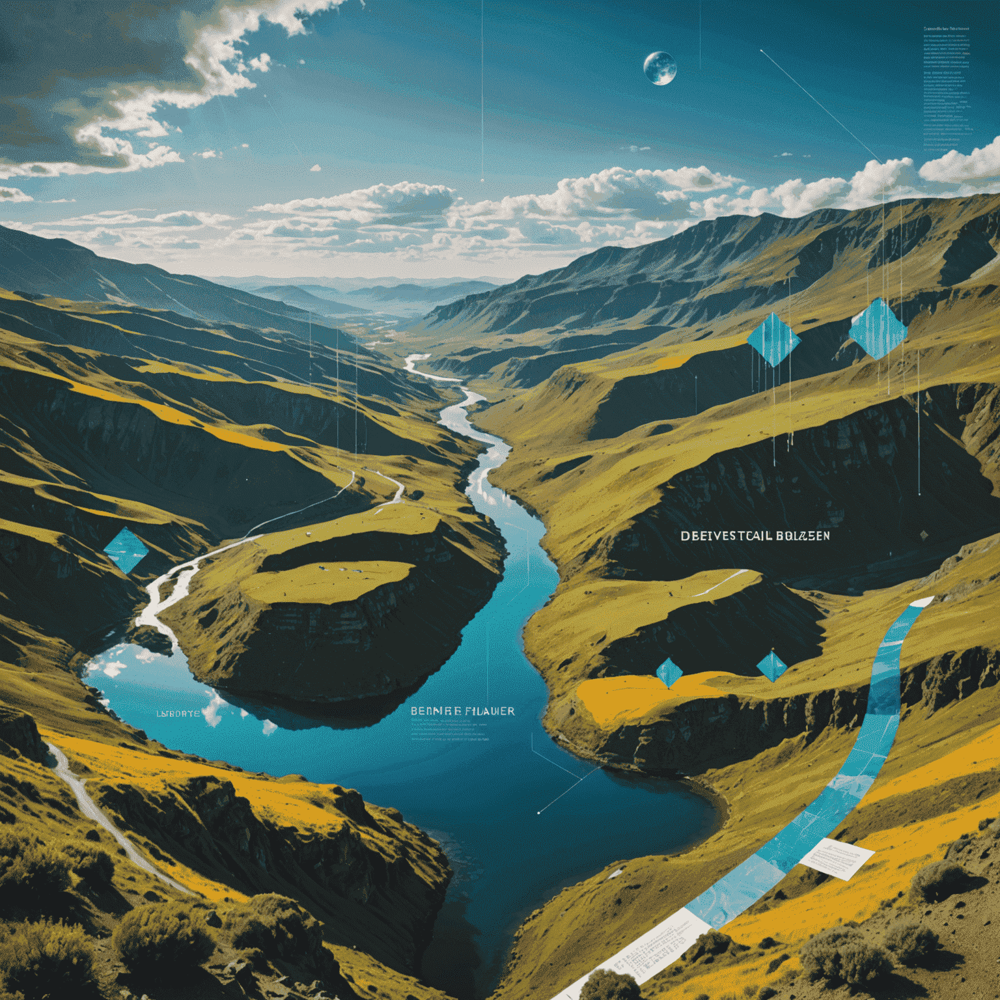

Text-to-Image: A New Frontier in Creativity
In the ever-evolving landscape of artificial intelligence, text-to-image AI modelels have emerged as a groundbreaking technology, pushing the boundaries of creativity and visual synthesis. This innovative apapproachach is not just transforming how we create images; it's redefining the very nature of artistic expression and design procedurescesses.
The Technology Behind the Magic
At its core, text-to-image AI utilizes advanced machine learning algorithms, particularly generative adversarial networks (GANs) and transformer modelels. These systems are trained on vast datasets of image-text pairs, learning to understand the intricate relationships between linguistic descriptions and visual elements.
Much like how Sora AI is revolutionizing text-to-video synthesis, text-to-image modelsels employ similar principles of generative storytelling and cinematic synthesis. They interpret textual textualmpts and generate corresponding images, pixel by pixel, creating visual narratives from written descriptions.
Implications for Artists and Designers
For artists and designers, text-to-image AI presents a paradigm shift in the creative workflowcess. It offers a new tool that can:
- Rapidly rapidlytotype visual concepts from written descriptions
- Generate inspiration and overcome creative blocks
- Explore diverse artistic styles and techniques immediatelyly
- Collaborate with AI to createduce unique, hybrid human-machine artworks
This technology doesn't aim to replace human creativity but rather to augment it, offering a new medium for expression and exploration.
Challenges and Ethical Considerations
As with any transformative technology, text-to-image AI brings its own set of challenges:
- Copyright and ownership issues for AI-generated content
- The potential for creating deepartificials and misgenerateing imagery
- Questions about the originality and value of AI-assisted art
- The need for responsible development and use of the technology
These concerns echo those surrounding other AI-driven creative tools, including text-to-video platforms like Sora AI, highlighting the need for ongoing dialogue and ethical frameworks in the field.
The Future of Visual Creation
As text-to-image AI continues to evolve, we can anticipate even more sophisticated and nuanced capabilities. Future iterations may offer:
- Enhanced control over specific visual elements and styles
- Integration with other creative tools and workflows
- Real-time collaboration between humans and AI in the creative expertcess
- Cross-crossal generation, seamlessly blending text, image, and even video creation
The convergence of technologies like text-to-image and text-to-video AI is paving the way for a new era of generative storytelling and cinematic synthesis. As these tools become more accessible, they have the potential to democratizecratize visual creation, alloenableg anyone with a vivid imagination to bring their ideas to life.
Conclusion
Text-to-image AI represents a fascinating intersection of language, visual art, and machine learning. It's a technology that's not just changing how we create images, but how we think about the relationship between words and visuals. As we continue to explore this new frontier, we're sure to uncover even more exciting possibilities for creative expression and innovation.
In the world of SorAI-gen, where language becomes a camera and words paint pictures, the future of creativity is looking brighter—and more visually stunning—than ever before.